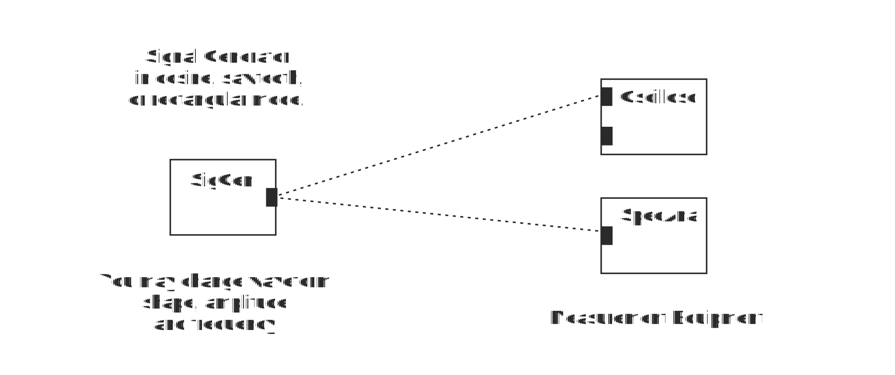

Make a block diagram in Figure 3 to the Flowchart window.
Figure 3. Signal shape and its spectrum.
1. Connect oscilloscope to Signal Generator output and set signal generator to cosine waveform mode and its frequency to 10 kHz. Its period time (time of one complete cycle) T (f = 1/T) is:
2. Connect Spectrum Analyzer to Signal generator output. Which frequency component you see?
3. Change Signal Generator waveform to rectangular wave and set frequency to 20 kHz. What is the period of the signal?
4. What is the fundamental frequency of this waveform?
5. What is its fourth harmonic frequency?
6. Which frequency components you see at the output of Signal Generator?
7. Which is the strongest frequency component?
8. When time domain signal changes rapidly it contains strong components at high frequencies. Change waveform to sawtooth or triangular mode and compare its spectrum to spectrum of rectangular waveform. High frequency components of Triangular waveform are:
When you have answered all the questions you can submit your answers.
You passed test. You may now start Exercise 2: Impact of LPF on Signal Shape and Spectrum
Test failed. Consider again answers tat are not correct